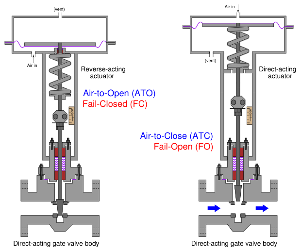
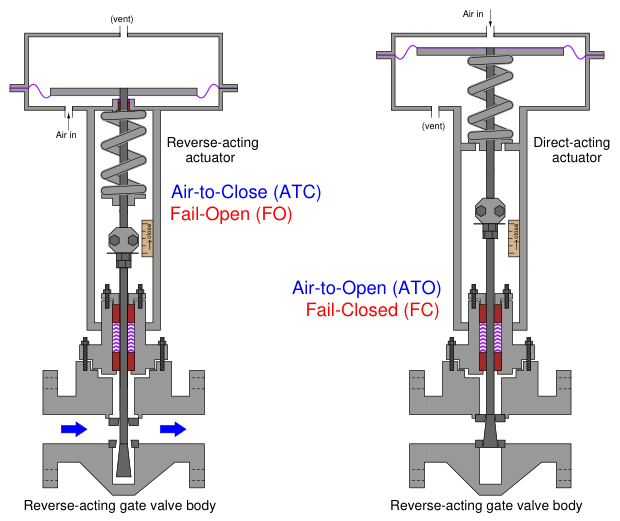
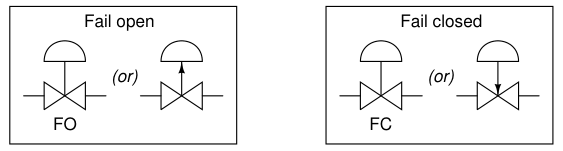
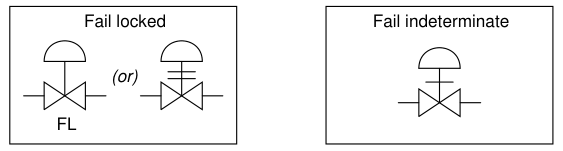
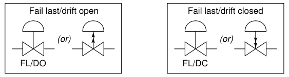
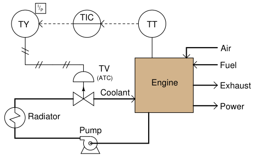

The original, as published: Tony R. Kuphaldt, Lessons In Industrial Instrumentation, Valve failure mode. CC BY 4.0, https://creativecommons.org/licenses/by/4.0/. Imported as published, from https://www.ibiblio.org/kuphaldt/socratic/sinst/book/liii.pdf https://www.ibiblio.org/kuphaldt/socratic/sinst/book/liii.pdf
An important design parameter of a control valve is the position it will “fail” to if it loses motive power. For electrically actuated valves, this is typically the last position the valve was in before loss of electric power. For pneumatic and hydraulic actuated valves, the option exists of having a large spring provide a known “fail-safe” position (either open or closed) in the event of fluid pressure (pneumatic air pressure or hydraulic oil pressure) loss.
The fail-safe mode of a pneumatic/spring valve is a function of both the actuator’s action and the valve body’s action. For sliding-stem valves, a direct-acting actuator pushes down on the stem with increasing pressure while a reverse-acting actuator pulls up on the stem with increasing pressure. Sliding-stem valve bodies are classified as direct-acting if they open up when the stem is lifted, and classified as reverse-acting if they shut off(close) when the stem is lifted. Thus, a sliding-stem, pneumatically actuated control valve may be made air-to-open or air-to-close simply by matching the appropriate actuator and body types. The most common combinations mix a direct-acting valve body with either a reverseor directacting valve actuator, as shown in this illustration:

Reverse-acting valve bodies may also be used, with opposite results:

The reverse-acting gate valve body shown in the left-hand illustration is open, with fluid flowing around the stem while the wide plug sits well below the seat area. Reverse-acting valve bodies tend to be more complex in construction than direct-acting valve bodies, and so they are less common in control valve applications. An interesting exception to this trend – although not technically a control valve but rather a self-actuated device – is the Fisher model 1098EGR pilot-operated pressure regulator which uses a reverse-acting valve body to throttle the flow of gas through it.
Valve fail mode may be shown in instrument diagrams by either an arrow pointing in the direction of failure (assuming a direct-acting valve body where stem motion toward the body closes and stem motion away from the body opens the valve trim) and/or the abbreviations “FC” (fail closed) and “FO” (fail open). Other failure modes are possible, as indicated by this set of valve symbols:



In order for a pneumatic or hydraulic valve to fail in the locked state, an external device must trap fluid pressure in the actuator’s diaphragm or piston chamber in the event of supply pressure loss. Valves that fail in place and drift in a particular direction are usually actuated by double-acting pneumatic piston actuators. These actuators do not use a spring to provide a definite fail mode, but rather use air pressure both to open and to close the valve. In the event of an air pressure loss, the actuator will neither be able to open nor close the valve, and so it will tend to remain in position. If the valve is of the globe design with unbalanced trim, forces exerted on the valve plug will move it in one direction (causing drift).
It is important to note how the failure mode of a valve is often linked to its control action (airto-open, air-to-close)11. That is, an air-to-open pneumatic control valve will fail closed on loss of air pressure, and vice-versa. This is an important fact because good safety engineering demands that the risk factors of the process determine proper valve failure mode rather than control system convention or habit. People may find it easier to understand the operation of an air-to-open control valve than an air-to-close valve (more signal = more process fluid flow), but this should not be a guiding principle in valve selection. Air-to-open control valves naturally fail closed which means they are appropriate for a particular process control application only if that process is safer with a failed-closed valve than with a failed-open valve. If the process is safer with a fail-open valve, then the pneumatically-actuated control valve specified for that application needs to be air-to-close. In fact, this basic principle forms the basis – or at least it should form the basis – of decisions made for all instrument actions in critical control loops: first determine the safest mode of valve failure, then select and/or configure instrument actions in such a way that the most probable modes of signal path failure will result in the control valve consistently moving to that (safest) position. For example, consider this automated cooling system for a large power-generating engine:

Clearly, it is more hazardous to the engine for the valve to fail closed than it would be for the valve to fail open. If the valve fails closed, the engine will surely overheat from lack of cooling. If it fails open, the engine will merely run cooler than designed, the only negative consequence being decreased efficiency. With this in mind, the only sensible choice for a control valve is one that fails open (air-to-close). However, our choices in instrument action do not end with the control valve. How should the temperature transmitter, the controller, and the I/P transducer be configured to act? In each case,
11Exceptions exist for valves designed to fail in place, where a valve may be engineered to “lock” in position through the action of an external device whether the valve itself is air-to-open or air-to-close. the answer should be to act in such a way that the valve will default to its fail-safe position (wide open) in the event of the most likely input signal fault. Stepping “backward” through the control system from the valve to the temperature sensor, the next instrument we encounter is the I/P transducer. Its job, of course, is to convert a 4-20 mA current signal into a corresponding pneumatic pressure that the valve actuator can use. Since we know that the valve’s failure mode is based on a loss of actuating air pressure, we want the I/P to be configured in such a way that it outputs minimum pressure in the event of an electrical fault in its 4-20 mA input signal wiring. Whether the wiring fails shorted or fails open, the result will be
0 milliamps at the I/P input terminals. Thus, the configuration of the I/P transducer should be direct, such that a 4 to 20 mA input signal produces a 3 to 15 PSI output pressure, respectively (i.e. minimum input current yields minimum output pressure). The next instrument in the loop is the controller. Here, we want the most likely input signal failure to result in a minimum output signal, so the valve will (once again) default to its “fail safe” position. Consequently, we should configure the controller for direct action just like we did with the I/P transducer (i.e. a decreasing PV signal from a broken wire or loose connection in the input circuit results in a decreasing output signal). Finally, we come to the last instrument in the control loop: the temperature transmitter (TT). As with most instruments, we have the option of configuring it for direct or reverse action. Should we choose direct (i.e. hotter engine = more mA output) or reverse (hotter engine = less mA output)? Here, our choice needs to be made in such a way that the overall effect of the control system is negative feedback. In other words, we need to configure the transmitter such that a hotter engine results in increased coolant flow (a wider-open control valve). Since we know the rest of the system has been designed so a minimum signal anywhere tends to drive the valve to its fail-safe mode (wide open), we must choose a reverse-acting transmitter, so a hotter engine results in a decreased milliamp signal from the transmitter. If the transmitter has a sensor “burnout” mode switch, we should flip this switch into the low-scale burnout position, so a burned-out sensor will result in 4 mA output (low end of the 4-20 mA scale), thus driving the valve into its safest (wide-open) position. Such a configuration – with its air-to-close control valve and a reverse-acting transmitter – may seem strange and counter-intuitive, but it is the safest design for this engine cooling system. We arrived at this “odd” configuration of instruments by first choosing the safest control valve failure mode, then choosing instrument actions in such a way that the most likely signal-path failures anywhere in the system would result in the same, consistent valve response. Of course it should go without saying that accurate documentation in the form of a loop diagram with instrument actions clearly shown is an absolutely essential piece of the whole system. If the safety of a control system depends on using any “non-standard” instrument configurations, those configurations had better be documented so those maintaining the system in the future will know what to expect!
Another important detail in this system is to configure the controller such that the operator display for the output signal still registers in an intuitive way: 0% should still represent a shut control valve, while 100% should still represent a wide-open valve. With the valve being air-to-close (signal-to-close from the controller’s perspective), this means the controller should be configured for reverse indication12 on the output display, so that an output of 4 mA (wide-open valve) reads 100% open, and an output of 20 mA (fully shut valve) reads 0%. As confusing as this might be for
12Note that reverse indication is not the same thing as reverse action for a loop controller. Reverse indication simply means the output display shows 100% valve position at 4 mA output, and 0% valve position at 20 mA output. Reverse action means the output decreases when the input (process variable) increases.
the technician who must service the controller, it is more important that the operator using this controller every working day sees something that makes intuitive sense. “Minor” details such as this become critically important if an emergency ever occurs, and the operator must make split-second decisions based on the indications they see!